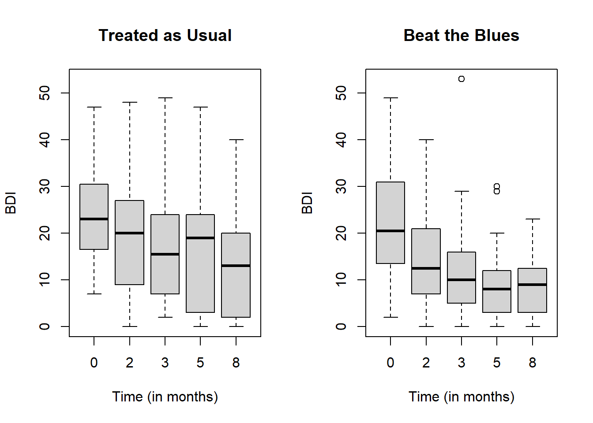
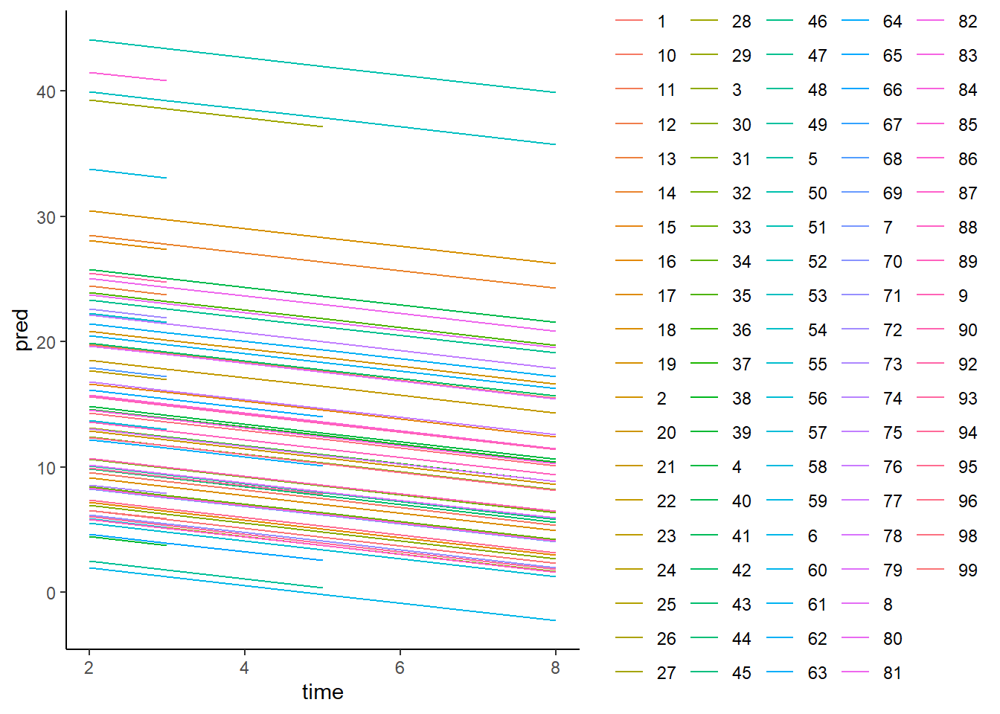
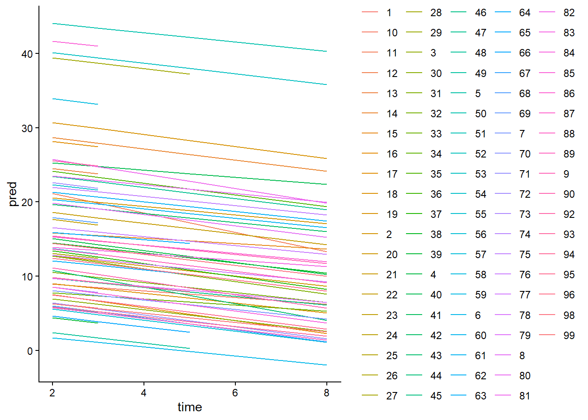
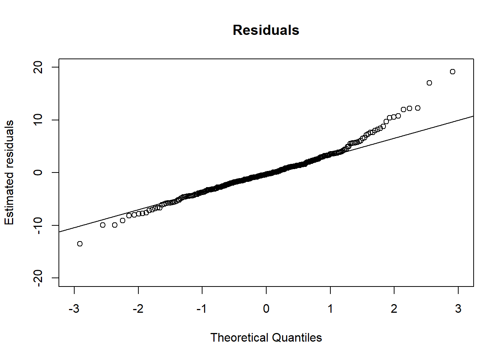
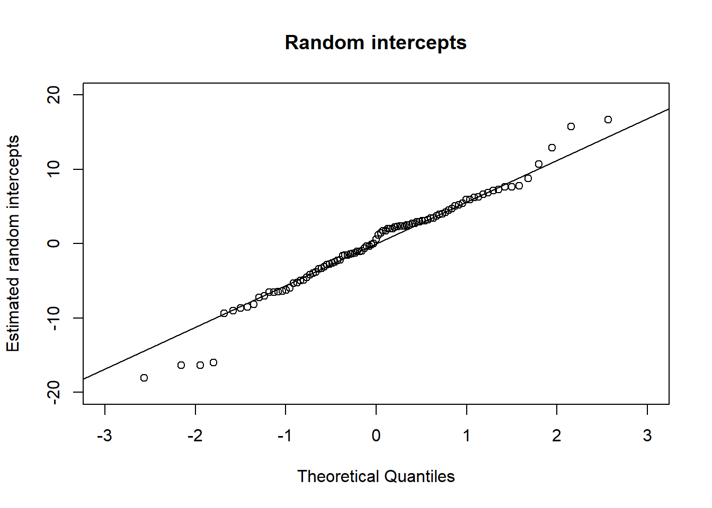

Mixed effects models
In this section, we will learn about mixed effects models. Mixed effects models are popular choices for modeling repeated measurements, such as longitudinal or clustered data. Examples of longitudinal data include blood pressure measurements taken over time from the same individuals and CD4 count over time from the same individuals. Examples of clustered data include students within schools and patients within hospitals. There are two components in a mixed effects model: fixed effects and random effects:
Fixed effects refer to general trends that are applicable to all subjects/clusters. This implies that we might want to investigate how students perform (on average) in different subjects such as math and history. These effects are commonly observed, i.e., fixed, across all schools.
Random Effects capture the unique characteristics of each subject/cluster that differentiate them from one another. For instance, some schools may have better resources, more experienced teachers, or a more supportive learning environment. These differences are specific to each school, and we use random effects to capture them.
Repeated measures
A useful reference on repeated measures is Section 9.2 of Faraway (2016).
In repeated measurement design, the response variable are measured multiple times for each individuals.
Linear Mixed Effects Models for Repeated Measures Data
A useful reference on linear mixed effects models is Section 12.4 of Hothorn and Everitt (2014).
The linear mixed effect models are based on the idea that the correlation of an individual’s responses depends on some unobserved individual characteristics.
In linear mixed effect models, we treat these unobserved characteristics as random effects in our model. If we could conditional on the random effects, then the repeated measurements can be assumed to be independent.
Data
We are going to use the BtheB dataset from the HSAUR2 package to explain the linear mixed effect model:
library(HSAUR2)
#> Loading required package: tools
data("BtheB")
kable(head(BtheB))%>%
kable_styling(bootstrap_options = "striped", full_width = F, position = "left")| drug | length | treatment | bdi.pre | bdi.2m | bdi.3m | bdi.5m | bdi.8m |
|---|---|---|---|---|---|---|---|
| No | >6m | TAU | 29 | 2 | 2 | NA | NA |
| Yes | >6m | BtheB | 32 | 16 | 24 | 17 | 20 |
| Yes | <6m | TAU | 25 | 20 | NA | NA | NA |
| No | >6m | BtheB | 21 | 17 | 16 | 10 | 9 |
| Yes | >6m | BtheB | 26 | 23 | NA | NA | NA |
| Yes | <6m | BtheB | 7 | 0 | 0 | 0 | 0 |
A typical form of repeated measurement data from a clinical trial data.
The individuals are allocated to different treatments then the response Beck Depression Inventory II were taken at baseline, 2, 3, 5, and 8 months
## Box-plot of responses at different time points in treatment and control groups
data("BtheB", package = "HSAUR2")
layout(matrix(1:2, nrow = 1))
ylim <- range(BtheB[,grep("bdi", names(BtheB))],na.rm = TRUE)
tau <- subset(BtheB, treatment == "TAU")[, grep("bdi", names(BtheB))]
boxplot(tau, main = "Treated as Usual", ylab = "BDI",xlab = "Time (in months)",
names = c(0, 2, 3, 5, 8),ylim = ylim)
btheb <- subset(BtheB, treatment == "BtheB")[, grep("bdi", names(BtheB))]
boxplot(btheb, main = "Beat the Blues", ylab = "BDI",xlab = "Time (in months)",
names = c(0, 2, 3, 5, 8),ylim = ylim)
The side-by-side box plots show the distributions of BDI overtime between control (Treated as Usual) and intervention (Beat the Blues) groups.
As time goes, drops in BDI are more obvious in intervention which may indicate the intervention is effective.
Regular model fixed intercept and slope
To compare, we start with fixed effect linear model, i.e., a regular linear model without any random effect:
## To analyze the data, we first need to convert the dataset to a analysis-ready form
BtheB$subject <- factor(rownames(BtheB))
nobs <- nrow(BtheB)
BtheB_long <- reshape(BtheB, idvar = "subject", varying = c("bdi.2m", "bdi.3m", "bdi.5m", "bdi.8m"),
direction = "long")
BtheB_long$time <- rep(c(2, 3, 5, 8), rep(nobs, 4))
kable(head(BtheB_long))%>%
kable_styling(bootstrap_options = "striped", full_width = F, position = "left")| drug | length | treatment | bdi.pre | subject | time | bdi | |
|---|---|---|---|---|---|---|---|
| 1.2m | No | >6m | TAU | 29 | 1 | 2 | 2 |
| 2.2m | Yes | >6m | BtheB | 32 | 2 | 2 | 16 |
| 3.2m | Yes | <6m | TAU | 25 | 3 | 2 | 20 |
| 4.2m | No | >6m | BtheB | 21 | 4 | 2 | 17 |
| 5.2m | Yes | >6m | BtheB | 26 | 5 | 2 | 23 |
| 6.2m | Yes | <6m | BtheB | 7 | 6 | 2 | 0 |
unique(BtheB_long$subject)
#> [1] 1 2 3 4 5 6 7 8 9 10 11 12 13 14 15 16 17 18
#> [19] 19 20 21 22 23 24 25 26 27 28 29 30 31 32 33 34 35 36
#> [37] 37 38 39 40 41 42 43 44 45 46 47 48 49 50 51 52 53 54
#> [55] 55 56 57 58 59 60 61 62 63 64 65 66 67 68 69 70 71 72
#> [73] 73 74 75 76 77 78 79 80 81 82 83 84 85 86 87 88 89 90
#> [91] 91 92 93 94 95 96 97 98 99 100
#> 100 Levels: 1 10 100 11 12 13 14 15 16 17 18 19 2 20 21 22 23 24 25 26 27 ... 99
kable(subset(BtheB_long, subject == 2))%>%
kable_styling(bootstrap_options = "striped", full_width = F, position = "left")| drug | length | treatment | bdi.pre | subject | time | bdi | |
|---|---|---|---|---|---|---|---|
| 2.2m | Yes | >6m | BtheB | 32 | 2 | 2 | 16 |
| 2.3m | Yes | >6m | BtheB | 32 | 2 | 3 | 24 |
| 2.5m | Yes | >6m | BtheB | 32 | 2 | 5 | 17 |
| 2.8m | Yes | >6m | BtheB | 32 | 2 | 8 | 20 |
kable(subset(BtheB_long, subject == 99))%>%
kable_styling(bootstrap_options = "striped", full_width = F, position = "left")| drug | length | treatment | bdi.pre | subject | time | bdi | |
|---|---|---|---|---|---|---|---|
| 99.2m | No | <6m | TAU | 13 | 99 | 2 | 5 |
| 99.3m | No | <6m | TAU | 13 | 99 | 3 | 5 |
| 99.5m | No | <6m | TAU | 13 | 99 | 5 | 0 |
| 99.8m | No | <6m | TAU | 13 | 99 | 8 | 6 |
lmfit <- lm(bdi ~ bdi.pre + time + treatment + drug +length, data = BtheB_long,
na.action = na.omit)
require(jtools)
#> Loading required package: jtools
#> Warning: package 'jtools' was built under R version 4.3.1
summ(lmfit)| Observations | 280 (120 missing obs. deleted) |
| Dependent variable | bdi |
| Type | OLS linear regression |
| F(5,274) | 35.78 |
| R² | 0.40 |
| Adj. R² | 0.38 |
| Est. | S.E. | t val. | p | |
|---|---|---|---|---|
| (Intercept) | 7.32 | 1.73 | 4.24 | 0.00 |
| bdi.pre | 0.57 | 0.05 | 10.44 | 0.00 |
| time | -0.94 | 0.24 | -3.97 | 0.00 |
| treatmentBtheB | -3.32 | 1.10 | -3.02 | 0.00 |
| drugYes | -3.57 | 1.15 | -3.11 | 0.00 |
| length>6m | 1.71 | 1.11 | 1.54 | 0.12 |
| Standard errors: OLS |
Random intercept but fixed slope
Let us start with a model with a random intercept but fixed slope. In this case, the resulting regression line for each individual is parallel (for fixed slope) but have different intercepts (for random intercept).
## Fit a random intercept model with lme4 package
library("lme4")
#> Warning: package 'lme4' was built under R version 4.3.1
#> Loading required package: Matrix
BtheB_lmer1 <- lmer(bdi ~ bdi.pre + time + treatment + drug +length
+ (1 | subject), data = BtheB_long, REML = FALSE,
na.action = na.omit)
summary(BtheB_lmer1)
#> Linear mixed model fit by maximum likelihood ['lmerMod']
#> Formula: bdi ~ bdi.pre + time + treatment + drug + length + (1 | subject)
#> Data: BtheB_long
#>
#> AIC BIC logLik deviance df.resid
#> 1887.5 1916.6 -935.7 1871.5 272
#>
#> Scaled residuals:
#> Min 1Q Median 3Q Max
#> -2.6975 -0.5026 -0.0638 0.4124 3.8203
#>
#> Random effects:
#> Groups Name Variance Std.Dev.
#> subject (Intercept) 48.78 6.984
#> Residual 25.14 5.014
#> Number of obs: 280, groups: subject, 97
#>
#> Fixed effects:
#> Estimate Std. Error t value
#> (Intercept) 5.59239 2.24244 2.494
#> bdi.pre 0.63968 0.07789 8.212
#> time -0.70476 0.14639 -4.814
#> treatmentBtheB -2.32908 1.67036 -1.394
#> drugYes -2.82495 1.72684 -1.636
#> length>6m 0.19708 1.63832 0.120
#>
#> Correlation of Fixed Effects:
#> (Intr) bdi.pr time trtmBB drugYs
#> bdi.pre -0.682
#> time -0.238 0.020
#> tretmntBthB -0.390 0.121 0.018
#> drugYes -0.073 -0.237 -0.022 -0.323
#> length>6m -0.243 -0.242 -0.036 0.002 0.157
summ(BtheB_lmer1)| Observations | 280 |
| Dependent variable | bdi |
| Type | Mixed effects linear regression |
| AIC | 1887.49 |
| BIC | 1916.57 |
| Pseudo-R² (fixed effects) | 0.39 |
| Pseudo-R² (total) | 0.79 |
| Est. | S.E. | t val. | d.f. | p | |
|---|---|---|---|---|---|
| (Intercept) | 5.59 | 2.24 | 2.49 | 108.98 | 0.01 |
| bdi.pre | 0.64 | 0.08 | 8.21 | 104.08 | 0.00 |
| time | -0.70 | 0.15 | -4.81 | 199.32 | 0.00 |
| treatmentBtheB | -2.33 | 1.67 | -1.39 | 97.12 | 0.17 |
| drugYes | -2.82 | 1.73 | -1.64 | 98.20 | 0.11 |
| length>6m | 0.20 | 1.64 | 0.12 | 100.26 | 0.90 |
| p values calculated using Satterthwaite d.f. |
| Group | Parameter | Std. Dev. |
|---|---|---|
| subject | (Intercept) | 6.98 |
| Residual | 5.01 |
| Group | # groups | ICC |
|---|---|---|
| subject | 97 | 0.66 |
AIC, BIC, and -loglik etc are goodness-of-fit statistics, which tells you how well the model fits your data. Since there is no standard to tell what values of these statistics are good, without comparison with other models, they have little information to tell.
Fixed effects: this is the standard output we will have in any fixed-effect model. The interpretation of estimated coefficients will be similar to a regular linear model.
You may compare the outputs with the regular linear model, then you will find that lm tends to underestimate the SE for estimated coefficients.
library(ggplot2)
BtheB_longna <- na.omit(BtheB_long)
dat <- data.frame(time=BtheB_longna$time,pred=fitted(BtheB_lmer1),Subject= BtheB_longna$subject)
ggplot(data=dat,aes(x=time, y=pred, group=Subject, color=Subject)) + theme_classic() +
geom_line() 
As we can see, for each individual, we have different intercepts but the slope over follow-up time is the same. Next, we will fit the model with random intercept and random slope.
Random intercept and random slope
In the codes below, we fitted a mixed effects model with both random intercept and random slope:
## We can fit a random slope and intercept model using lme4 package and treat variable time as random slope.
library("lme4")
BtheB_lmer2 <- lmer(bdi ~ bdi.pre + time + treatment + drug +length +
(time | subject), data = BtheB_long, REML = FALSE,
na.action = na.omit)
summ(BtheB_lmer2)| Observations | 280 |
| Dependent variable | bdi |
| Type | Mixed effects linear regression |
| AIC | 1891.04 |
| BIC | 1927.39 |
| Pseudo-R² (fixed effects) | 0.39 |
| Pseudo-R² (total) | 0.80 |
| Est. | S.E. | t val. | d.f. | p | |
|---|---|---|---|---|---|
| (Intercept) | 5.61 | 2.25 | 2.50 | 106.79 | 0.01 |
| bdi.pre | 0.64 | 0.08 | 8.25 | 102.78 | 0.00 |
| time | -0.70 | 0.15 | -4.56 | 57.69 | 0.00 |
| treatmentBtheB | -2.38 | 1.67 | -1.42 | 97.12 | 0.16 |
| drugYes | -2.87 | 1.73 | -1.66 | 98.18 | 0.10 |
| length>6m | 0.14 | 1.64 | 0.09 | 100.04 | 0.93 |
| p values calculated using Satterthwaite d.f. |
| Group | Parameter | Std. Dev. |
|---|---|---|
| subject | (Intercept) | 7.12 |
| subject | time | 0.43 |
| Residual | 4.90 |
| Group | # groups | ICC |
|---|---|---|
| subject | 97 | 0.68 |
The interpretation of the model outputs will be similar to the model with only random intercepts. Let us plot the data:
library(ggplot2)
BtheB_longna <- na.omit(BtheB_long)
dat <- data.frame(time=BtheB_longna$time,pred=fitted(BtheB_lmer2),Subject= BtheB_longna$subject)
ggplot(data=dat,aes(x=time, y=pred, group=Subject, color=Subject)) + theme_classic() +
geom_line() 
From the figure, we can see, we have different intercepts and different slopes over follow-up time for each individual.
Choice among models
A common question is to ask should I add random slope to our model or random intercept is good enough. We may want to compare the models in terms of AIC and BIC. Smaller values indicate a better model.
lm usually will not be considered as a competitor of lme as they basically apply to different types of data.
When choosing between random intercept and random slope, a quick solution is to fit all possible models then do likelihood ratio tests.
For example, I am not sure whether I should use random intercept only or random intercept + random slope. I could fit both model, then do a likelihood ratio test:
The p-value is greater than 0.05, which indicate that adding a random slope does not make the fitting significantly better. To keep the model simple, we may just use random intercept.
Prediction of Random Effects
- Ref: (Hothorn and Everitt 2014) Section 12.5
If you have noticed in the R output of linear mixed effect model. Random effects are not estimated in the model.
We could use the fitted model to predict random effects.
Also, the predicted random effects can be used to examine the assumptions we have for linear mixed effect model.
The ranef function is used to predict the random effect in R
qint <- ranef(BtheB_lmer1)$subject[["(Intercept)"]]
qint
#> [1] -16.36173411 -2.44276827 -3.81655251 3.05333928 3.45142248
#> [6] 7.76598376 2.72263773 -7.22484569 6.84680617 -1.02552084
#> [11] 2.40417048 1.16611114 -8.55346533 -6.25844483 -2.26117896
#> [16] -5.23031336 2.52509381 -1.64263857 -1.07523649 3.93689163
#> [21] 7.66903473 -16.38156595 1.74883174 -1.31871410 -9.02883854
#> [26] -2.75150756 2.38884151 2.72740404 -3.41918542 6.27519245
#> [31] -4.52154811 -8.67437225 -0.34470208 -0.63972054 -0.08927194
#> [36] 7.61914282 2.91050412 -2.58455318 4.24637616 -16.01664364
#> [41] 5.90993779 3.21014012 -7.04631398 3.09608824 4.71327710
#> [46] 16.70161338 2.26241522 2.26584476 15.77002952 1.75410838
#> [51] 6.18741474 1.99791717 0.56774362 4.04107968 10.72891321
#> [56] -1.54551028 -5.28330207 2.04552526 2.36472056 -1.56879952
#> [61] 6.63565636 5.45929329 -4.19695096 -6.39632488 -2.21496288
#> [66] -0.95956136 -3.96021851 7.17628718 -1.41644518 -4.99763144
#> [71] -2.83374092 -1.28015494 8.79345988 -0.33213428 1.43146353
#> [76] -3.13316295 -6.52989461 2.51445573 5.93415004 3.42003755
#> [81] 4.49954804 3.75178702 -6.44832897 12.88173218 -9.36110814
#> [86] 2.02028152 -18.09960241 -6.53428535 5.06613705 -3.31816912
#> [91] 7.26187445 0.03103101 -8.14350181 -4.89326763 2.92437698
#> [96] 5.24835927 -5.96778945
## predict random effects using the fitted modelCheck assumptions
Remember, we have two assumptions in the linear mixed effect model with random intercept:
- error term follows normal distribution
- beta for subject \(i\) follows normal distribution
We have predict the values of random effect and we could extract residuals from the fitted model. Therefore, we can use QQ-plot to check their normality
# Assumption 1
qres <- residuals(BtheB_lmer1)
qqnorm(qres, xlim = c(-3, 3), ylim = c(-20, 20), ylab = "Estimated residuals",
main = "Residuals")
qqline(qres)
# Assumption 2
qint <- ranef(BtheB_lmer1)$subject[["(Intercept)"]]
qqnorm(qint, ylab = "Estimated random intercepts", xlim = c(-3, 3), ylim = c(-20, 20),
main = "Random intercepts")
qqline(qint)
Since points are almost on the lines, we can say that the normality assumption is met.
Video content (optional)
For those who prefer a video walkthrough, feel free to watch the video below, which offers a description of an earlier version of the above content.